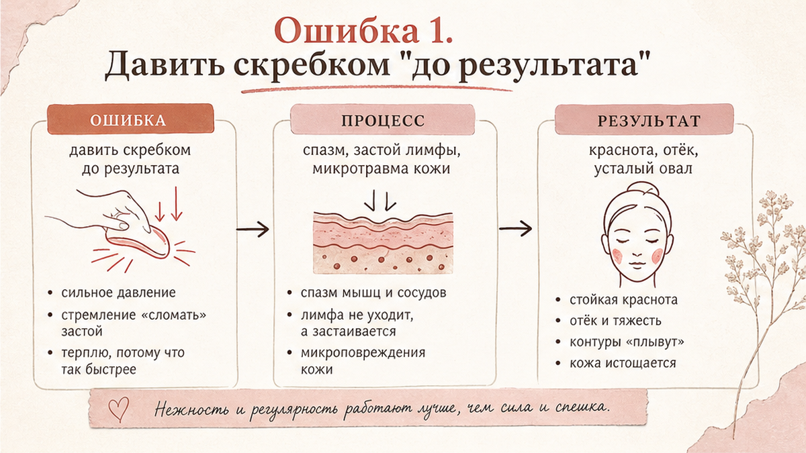
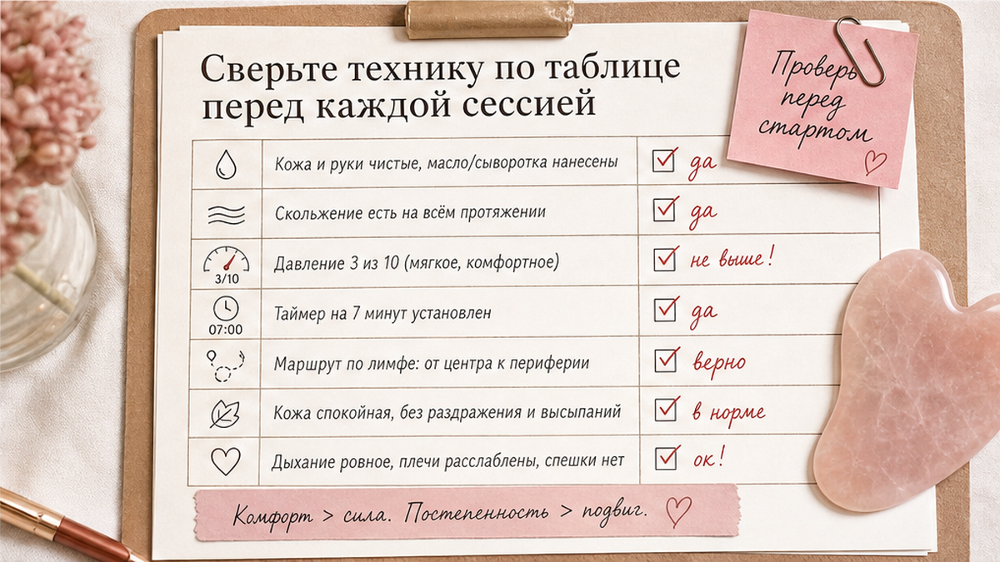
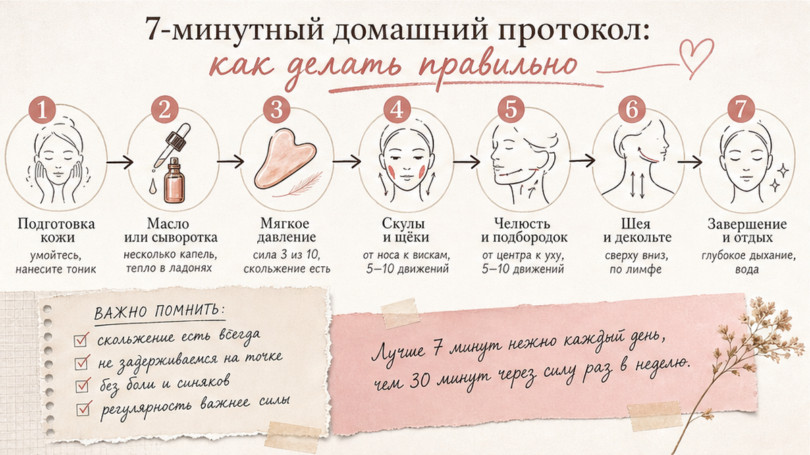

Скребок гуаша может дать очень красивый результат дома, но только если техника мягкая и системная. Самая частая проблема, которую я вижу у женщин 40+, - не "плохой скребок", а избыточное давление, спешка и работа по сухой коже. В итоге вместо свежего лица получаются краснота, тяжесть и ощущение, что ткани стали более уставшими. Ниже - 5 ошибок, которые реально мешают, и простой протокол, как делать правильно.
Я отношусь к гуаша как к аккуратной ручной настройке лица, а не как к силовой тренировке. Наша цель - улучшить отток, снять гипертонус и поддержать овал, а не "стереть" отек за один раз. Поэтому в этой инструкции будет много про то, как не делать, и ровно столько же про то, как делать безопасно.

Когда мы давим сильно, кожа и поверхностные ткани получают лишнюю нагрузку. На коротком отрезке может быть ощущение "разогрева", но через несколько часов лицо часто выглядит более уставшим. В зоне щек и под глазами это особенно заметно.
Как делать правильно: держите давление на уровне 3 из 10. Представьте, что вы распределяете сыворотку, а не "продавливаете" мышцу. Если появляется стойкая краснота - сразу снижайте интенсивность.
Гуаша по сухой коже увеличивает трение. Это дает микростресс, который не улучшает качество кожи и не помогает лимфооттоку. Особенно часто это происходит утром, когда хочется сделать все быстро.
Как делать правильно: нанесите 3-5 капель масла или легкой эмульсии, распределите тонким слоем и только после этого начинайте проходы. Средство должно давать скольжение, но не "плавание" скребка.
Если вести скребок "куда удобнее", вы теряете главный смысл процедуры. Лицо любит понятную схему: от центра к периферии, от верхних зон к точкам оттока, с мягким завершением в боковых линиях шеи.
Как делать правильно: каждый участок прорабатывайте по 3-5 медленных проходов. Начинайте со скул и щек, затем линия челюсти, и завершайте боковой поверхностью шеи вниз.
Чем быстрее темп, тем хуже контроль угла и давления. А большое количество повторов быстро перегружает ткани. В домашних условиях лучше короткая стабильная рутина, чем длинная "ударная" сессия.
Как делать правильно: ставьте таймер на 7 минут и держите спокойный ритм. На одну линию хватит 3-5 проходов. Останавливайтесь раньше, если видите реактивную красноту.
Есть дни, когда коже нужен не скребок, а отдых: выраженное раздражение, активные воспаления, царапины, свежие агрессивные процедуры. В такие дни гуаша может усилить чувствительность.
Как делать правильно: перенесите сессию на 24-48 часов и выберите мягкий уход. Если есть сомнения по чувствительной коже, начните с минимальной частоты - 2-3 раза в неделю.

Чеклист перед стартом: проверьте скольжение, используйте мягкий угол скребка, добавьте таймер на 7 минут, избегайте резких движений, уберите привычку давить на кожу. Если есть раздражение - не делайте процедуру в этот день и сделайте паузу.
| Ошибка | Что происходит | Как исправить |
|---|---|---|
| Сильное давление | Лишняя нагрузка, усталый вид к вечеру | Давление 3/10, медленный темп |
| Сухая кожа | Трение и реактивная краснота | Добавить средство скольжения |
| Хаотичные линии | Слабый лимфодренажный эффект | Маршрут от центра к периферии |
| Слишком много проходов | Перегрузка тканей | 3-5 проходов на линию |
| Процедура при раздражении | Рост чувствительности | Пауза 24-48 часов |

Если хочешь выстроить уход под свою реактивность кожи, начни с базовой опоры: сначала убери скрытые ошибки рутины в статье про 5 ошибок ухода. А чтобы понять, почему отеки и тяжесть часто связаны с рутиной, посмотри материал про утренние отеки.
Достоверность: рекомендации носят оздоровительно-косметический характер и не заменяют консультацию врача при острых или хронических состояниях.
Если кожа спокойная и нет раздражения, можно делать короткие мягкие сессии. Для старта чаще достаточно 3-4 раз в неделю, чтобы оценить реакцию без перегруза.
Нет. Эффект дает техника, регулярность и мягкость давления. Важнее форма, которая удобно ложится по линии челюсти и скуле.
Обычно причина в ошибках: сильное давление, хаотичные линии или слишком длинная сессия. Уменьшите интенсивность и сократите количество проходов.
Да, но лучше разделять задачи. Для гуаша выбирайте средство скольжения, а основной крем наносите после процедуры, когда кожа успокоилась.
При активном раздражении, поврежденной коже, выраженном воспалении и любом состоянии, где прикосновения усиливают дискомфорт. В сомнительных случаях сначала обсудите это с врачом.